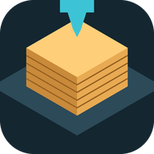

Warsztat 3D
autor Adam Bryks 2026
📁 Moje modele ▾
📦 Magazyn 3D
💾 Zapisz
Drukarka
PLA
PETG
ABS
PLA-CF
ASA
TPU
●
wczytuję…
☾ Noc
📶 WiFi
Złożone
Na stole drukarki
Normalny
Z góry
Z przodu
⭳ PNG
Ładuję podgląd 3D…
1 palec / lewy przycisk: obracanie · 2 palce / prawy przycisk: przesuwanie · kółko / szczypanie: zoom